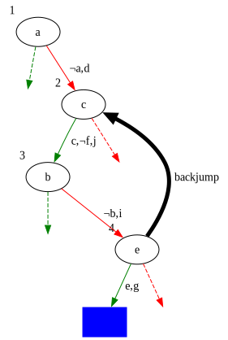

SATisfying Solutions to Difficult Problems!!
Vaibhav Sagar (@vbhvsgr)
SAT Solvers??
NP-complete problems
- Decision (yes/no) problems
- Can be verified quickly (in polynomial time)
- Currently unknown how to solve quickly (P versus NP problem)
- All equivalent!
Examples
- Knapsack
- Travelling salesman
- Subset sum
- Graph coloring
- Sudoku
- Boolean satisfiability
Boolean Satisfiability Problem
Can we assign truth values to Boolean variables in propositional logic formulas to satisfy the formula?
Boolean Satisfiability Problem
- Commonly expressed like \((x \vee y \vee z) \wedge (x \vee \neg y) \wedge (\neg y \vee \neg x) \wedge (\neg z)\) (Conjunctive Normal Form)
- NP-complete (!)
- Can express any other NP-complete problem!
SAT Solvers
Programs that solve boolean satisfiability problems and tell you satisfying assignments!!
Sudoku
Example

Tim Stellmach, CC0, via Wikimedia Commons
Rules
- one digit per cell
- each digit once per row/column
- each digit once per 3x3 sub-grid
- must use filled-in cells
Insight
- 9 boolean variables for each cell!
- only 1 is true, other 8 are false
- \(x_{r,c,1}\), \(x_{r,c,2}\),…,\(x_{r,c,9}\)
Each cell has at least one value
\[\displaylines{ \text{\tiny{row 1, column 1 is one of 1,2,...9}} \\ (x_{1,1,1} \vee x_{1,1,2} \vee \dots \vee x_{1,1,9}) \wedge \\ \text{\tiny{row 1, column 2 is one of 1,2,...9}} \\ (x_{1,2,1} \vee x_{1,2,2} \vee \dots \vee x_{1,2,9}) \wedge \\ \dots \\ \text{\tiny{row 9, column 9 is one of 1,2,...9}} \\ (x_{9,9,1} \vee x_{9,9,2} \vee \dots \vee x_{9,9,9}) }\]
Each row has all values
\[\displaylines{ \text{\tiny{1 occurs in row 1}} \\ (x_{1,1,1} \vee x_{1,2,1} \vee \dots \vee x_{1,9,1}) \wedge \\ \text{\tiny{2 occurs in row 1}} \\ (x_{1,1,2} \vee x_{1,2,2} \vee \dots \vee x_{1,9,9}) \wedge \\ \dots \\ \text{\tiny{9 occurs in row 9}} \\ (x_{9,1,9} \vee x_{9,2,9} \vee \dots \vee x_{9,9,9})}\]
Each cell has at most one value
\[\displaylines{ \text{\tiny{row 1, column 1 cannot be both 1 and 2}} \\ (\neg x_{1,1,1} \vee \neg x_{1,1,2}) \wedge \\ \text{\tiny{row 1, column 1 cannot be both 1 and 3}} \\ (\neg x_{1,1,1} \vee \neg x_{1,1,3}) \wedge \\ \dots \\ \text{\tiny{row 9, column 9 cannot be both 8 and 9}} \\ (\neg x_{9,9,8} \vee \neg x_{9,9,9})}\]
Solving
- Express your problem as a propositional logic formula in CNF
- Feed it to a SAT solver
- ????
- PROFIT!!!
DPLL
Example
\[(x \vee y \vee z) \wedge (x \vee \neg y) \wedge (\neg y \vee \neg x) \wedge (\neg z)\]
\(x\): 🤷
\(y\): 🤷
\(z\): 🤷
Pick a variable
Let’s set \(z\) to False
Unit propagation
- If there is a unary clause, assign it
- Delete all clauses that are satisfied
- Remove the literal where it is False
Example
\[(x \vee y \xcancel{\vee {\color{red} z}}) \wedge (x \vee \neg y) \wedge (\neg y \vee \neg x) \xcancel{\wedge {\color{green} (\neg z)}}\]
\(x\): 🤷
\(y\): 🤷
\(z\): False
Pick a variable
Let’s set \(y\) to True
Example
\[\xcancel{{\color{green}(x \vee y \vee z)} \wedge} (x \xcancel{\vee {\color{red} \neg y}}) \wedge (\xcancel{{\color{red} \neg y} \vee} \neg x) \xcancel{\wedge {\color{green }(\neg z)}}\]
\(x\): 🤷
\(y\): True
\(z\): False
Conflict!
Backtrack
Let’s set \(y\) to False
Example
\[(x \xcancel{\vee {\color{red} y} \vee {\color{red} z}) \wedge {\color{green}(x \vee \neg y)} \wedge {\color{green} (\neg y \vee \neg x)} \wedge {\color{green} (\neg z)}}\]
\(x\): 🤷
\(y\): False
\(z\): False
Pure literal elimination
There is only one possible value for \(x\), so assign it
Solution
\(x\): True
\(y\): False
\(z\): False
Davis-Putnam-Logemann-Loveland
- Backtracking search
- Unit propagation
- Pure literal elimination
Downsides
- Often finds the same conflict multiple times
- Backtracks one level at a time (chronologically)
- No memory of past conflicts
Can we learn from our mistakes?
CDCL
CDCL
- Distinguishes between decisions (assignments) and implications (unit propagation, literal elimination)
- Keeps track of the implication graph
Example
\[\begin{align} & (a \vee d) \wedge \\ & (a \vee \neg c \vee \neg f) \wedge \\ & (a \vee f \vee j) \wedge \\ & (b \vee i) \wedge \\ & (\neg e \vee \neg c \vee g) \wedge \\ & (\neg e \vee f \vee \neg g) \wedge \\ & (e \vee f \vee \neg h) \wedge \\ & (e \vee h \vee \neg j) \end{align}\]
\(a\)
\[\begin{align} & {\color{red} a} \vee {\color{green} d} \\ & {\color{red} a} \vee \neg c \vee \neg f \\ & {\color{red} a} \vee f \vee j \\ & b \vee i \\ & \neg e \vee \neg c \vee g \\ & \neg e \vee f \vee \neg g \\ & e \vee f \vee \neg h \\ & e \vee h \vee \neg j \end{align}\]
\(c\)


\[\begin{align} & {\color{red} a} \vee {\color{green} d} \\ & {\color{red} a} \vee {\color{red}\neg c} \vee {\color{green} \neg f} \\ & {\color{red} a} \vee {\color{red} f} \vee {\color{green} j} \\ & b \vee i \\ & \neg e \vee {\color{red}\neg c} \vee g \\ & \neg e \vee {\color{red} f} \vee \neg g \\ & e \vee {\color{red} f} \vee \neg h \\ & e \vee h \vee {\color{red}\neg j} \end{align}\]
\(b\)
\[\begin{align} & {\color{red} a} \vee {\color{green} d} \\ & {\color{red} a} \vee {\color{red}\neg c} \vee {\color{green} \neg f} \\ & {\color{red} a} \vee {\color{red} f} \vee {\color{green} j} \\ & {\color{red} b} \vee {\color{green} i} \\ & \neg e \vee {\color{red}\neg c} \vee g \\ & \neg e \vee {\color{red} f} \vee \neg g \\ & e \vee {\color{red} f} \vee \neg h \\ & e \vee h \vee {\color{red}\neg j} \end{align}\]
\(e\)
\[\begin{align} & {\color{red} a} \vee {\color{green} d} \\ & {\color{red} a} \vee {\color{red}\neg c} \vee {\color{green} \neg f} \\ & {\color{red} a} \vee {\color{red} f} \vee {\color{green} j} \\ & {\color{red} b} \vee {\color{green} i} \\ & {\color{red}\neg e} \vee {\color{red}\neg c} \vee {\color{blue} g} \\ & {\color{red}\neg e} \vee {\color{red} f} \vee {\color{blue}\neg g} \\ & {\color{green} e} \vee {\color{red} f} \vee \neg h \\ & {\color{green} e} \vee h \vee {\color{red}\neg j} \end{align}\]
Unique Implication Point
\[\displaylines{\neg (\neg f \wedge c \wedge e) \\ \iff \\ (f \vee \neg c \vee \neg e)}\]
Learned Clause
\[f \vee \neg c \vee \neg e\]
Learned Clause
\[\begin{align} & (a \vee d) \wedge \\ & (a \vee \neg c \vee \neg f) \wedge \\ & (a \vee f \vee j) \wedge \\ & (b \vee i) \wedge \\ & (\neg e \vee \neg c \vee g) \wedge \\ & (\neg e \vee f \vee \neg g) \wedge \\ & (e \vee f \vee \neg h) \wedge \\ & (e \vee h \vee \neg j) \wedge \\\ & {\color{green}(f \vee \neg c \vee \neg e)} \end{align}\]
Backjumping

Conflict-driven Clause Learning
- Learned clauses!
- Non-chronological backtracking!
- Basis of most modern SAT solvers
Okay Now Let’s Do A Silly One
SLS
What if we just guessed?
- Generate a random assignment
- Pick a random clause
- Probabilistically flip a variable in the clause
- Repeat until you solve it or get tired!
Stochastic Local Search
- Surprisingly effective!
- WalkSAT
- Can be done in parallel
- Can use a form of clause learning
- Can’t conclusively determine unsatisfiability(!)
- Reminds me of simulated annealing in some ways
SMT
Problem
\[ \begin{align} SEND &\\ + MORE &\\ \hline MONEY \end{align} \]
How?
We’d have to teach the SAT solver arithmetic!
Satisfiability Modulo Theories
- SAT solvers extended
- bitvectors, arrays, algebraic datatypes, etc.
- Z3, CVC, Yices, Boolector
Recap
SAT solvers
Solve NP-complete problems expressed as CNF Boolean formulas
DPLL
- Backtracking search
- Unit propagation
- Pure literal elimination
CDCL
- DPLL++
- Learned clauses
- Non-chronological backtracking
SLS
- Random guessing
- Probabilistic variable flipping
SMT solvers
SAT extended with theories